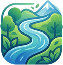

KapásA telefon nem engedi menteni a naplót, megtelt a tárhely. A legutóbbi változások újraindításkor elveszhetnek. Készíts mentést: Beállítások → Biztonsági mentés.
Ahogy gyűlnek a fogások, itt látod, mikor, mivel és hol fogtál a legtöbbet.
A fogásaid csak ezen a telefonon vannak. Ha elveszik vagy cserélni kell, a mentésből vissza tudod állítani őket.
A mentés egy fájl a naplóddal és a fotóiddal, amit te választasz ki, hová kerüljön (pl. Drive). Visszaállításkor a meglévő fogásaid megmaradnak, csak az újak kerülnek be.
Az Android emellett naponta egyszer a Google-fiókodba is menti a naplót (töltőn, wifin), de a teljes méretű fotókat nem. Bekapcsolása: telefon Beállítások → Google → Biztonsági mentés.
Verzió: –
Az országos szabályok (133/2013. VM rendelet), évente a rendelet szerint hétvégéhez és ünnepnaphoz igazítva; Duna és Tisza esetén az egységes vízterületi szabályokkal. Napi darabszám az elvitt halakra: csukából, balinból, süllőből, kősüllőből, pontyból és harcsából fajonként 3, összesen 5 db (Dunán 2 és 4). A helyi horgászrend ettől szigorúbb lehet, mindig azt nézd meg a jegyeden.